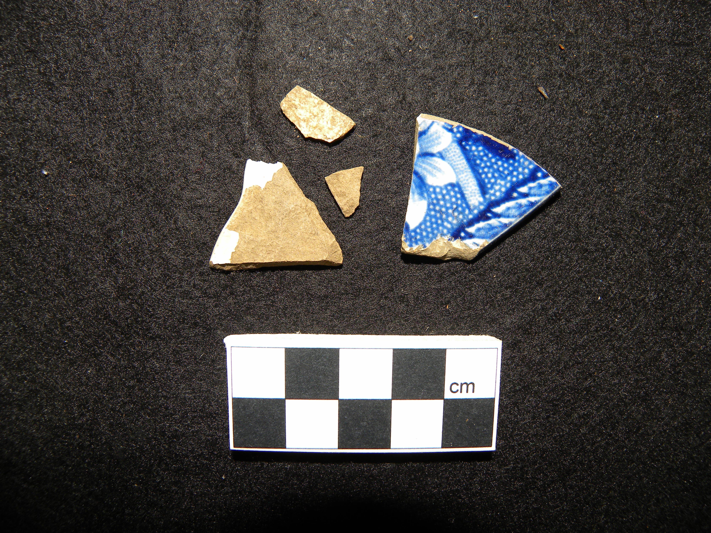

Ceramic
Location: trench 2, context 3
Ceramic was found throughout the LAB site, and remains one of the fundamental materials in archaeology. Although fragile and prone to breaking, ceramic is quite durable when it comes to surviving underground for long periods of time, and is likely to remain intact during burial. As a result, it is one of the most commonly recovered materials on archaeological digs.[2]
Some ceramic we found, like the sherd on the left, was undecorated and unglazed, while other sherds, such as the one on the right, had highly intricate patterns glazed onto it. The particular occurrence of white ceramic with a blue pattern was quite common on our site, and we found many sherds matching this style.